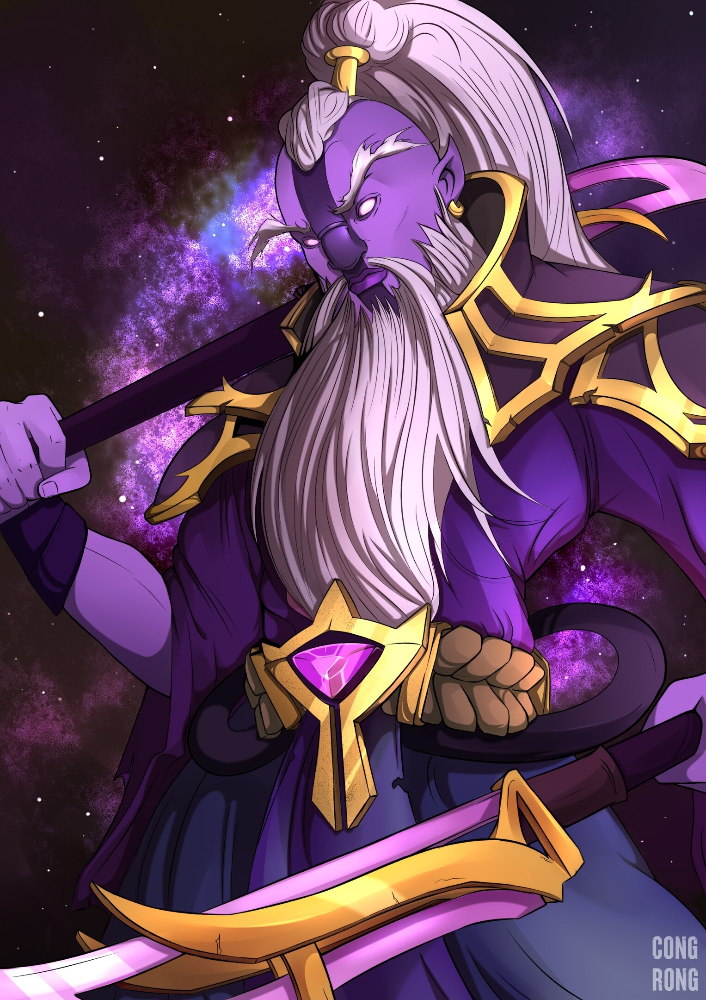

Inai, the Void Spirit, is a melee intelligence hero that relies on the element of surprise to blast apart foes with the power of the void. He plays like no other hero, relying on a wide variety of skills that allow him to put his enemies out of position while quickly jumping in and out of combat. Using his Aether Remnants, Inai can start and end any fight in seconds by forcing enemies to attack remnants of himself that guard from all angles. The void is both sword and shield for Void Spirit, whether he takes a quick repose in the aether to teleport to an area of his choice with explosive force, or shields himself in volatile energy that slays the weak and nullifies the attacks of the mighty. Should anything manage to survive the Void Spirit's onslaught, he calls upon his mastery of the ultimate Astral Step technique, dashing through space and time to attack and mark enemies for death not once, but twice.
Not even the other spirits claim to understand the mind and machinations of the eldest amongst them, Inai the Void Spirit. Privy to secrets that would shatter a mortal mind, the Void Spirit observes the workings of the universe from an unknowable vantage, choosing to let carefully groomed servants do his bidding -- only emerging from his Hidden Temple into the material plane when he deems that he alone can steer the course of reality along its proper path.
With an expansive perspective on existence, Inai is focused intently on a point in time beyond which he cannot see, when the fabrics of multiple realities are fated to collide. Now he steps from the aether to personally resolve the battle of the Ancients and prepare his allies for what he views as a greater conflict to come.